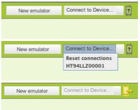

Part 4 of 4 Setup Instructions
In this section, we'll make sure your phone is ready to connect with App Inventor. This involves checking a few settings and then connecting the phone to your computer with a USB cable. If you have a Windows machine, then you may also need to install a driver for the phone. You can find the instructions for installing Windows Drivers here.
| 1. Compatibility | 2. Phone Settings | 3. USB Settings | 4. Connect Phone |
1. Compatible phones
There are hundreds of different Android phone models, and new ones are appearing all the time. Even we don't know about all of them. (See a user-compiled list of phones that are being used successfully with App Inventor..) Your phone must have an SD card installed so that App Inventor has a place to store all media (sound, image, video) files.
WINDOWS USERS: You will need to install a USB driver on you computer.Different phone models generally require different drivers. ( More information about drivers)
Most Android phones and tablets are likely to work with App Inventor. Follow the instructions on this page, and if you have any problems, see the troubleshooting page, or search the App Inventor User Forum under "Getting set up and connecting your phone" for advice from others who may be using the same phone.
2. Check your phone settings
To get your phone ready to work with App Inventor, follow these steps:
- Tap the Home button to go to your phone's Home screen.
- Tap the Menu button, then Settings, then Applications.
- If your phone has an Unknown sources setting, make sure it is checked.
- Tap Development.
- Make sure both USB Debugging and Stay Awake are checked.


If your phone is on the lock screen, unlock it as you would to get ready to run an app. Now get your USB cable and connect the phone to the computer. Two status messages appear on the phone in the notifications area at the top of the screen:
- "USB Connected" means the phone is connected to the computer.
- "USB Debugging Connected" allows the App Inventor on the computer to control the phone.
3. USB Storage Settings
Upon connecting your phone with a USB cable to your computer, if you see a notification about "Turn on USB Storage", make sure you DON'T tap this button. If you do, you can tap it again to turn USB storage off.
If you get an error message about external storage, you'll need to check that your phone is not set for Mass Storage mode. To do this,
- Tap the Home button to go to your phone's Home screen.
- Tap the Menu button, then Settings, then Connect to PC.
- Tap Connection Type and then choose "Charge Only". Make sure that other choices are not selected. It is especially important that choices "Disk Drive" or "Mass Storage" are NOT selected (these words vary by phone and Android version).
On some phones, like DroidX, you can also change this setting from the notification at the top of the screen:
- Pull down the notification panel from the top of the screen
- Tap USB Connected
- Tap Charge Only
4. Connect your phone
Open the Blocks Editor if not opened. Connect your phone to the computer with a USB cable, and click the text "Connect to Device..." at the top of the Blocks Editor window. You'll see a drop-down list with your phone listed, identified by its model type (e.g., HT94LLZ00001). Click on that. You'll see a yellow animated arrow move back and forth, showing that App Inventor is connecting to the phone.

To connect:
- Click the text "Connect to Device...."
- Select the phone's model number
- You will see a yellow animated arrow
Creating this connection can take another minute or two. When it's all done, the arrow will stop moving and turn green. If you look at the phone screen, you'll see that it has turned all white. When you add things to the screen in the App Inventor Designer, you'll see them appear automatically on the phone's screen.